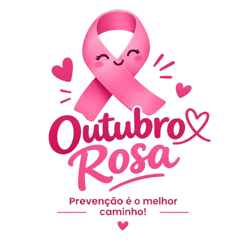

Conheça suas mamas e fique atento a alterações. A detecção precoce e o acompanhamento adequado são fundamentais.

Embora seja muito mais comum em mulheres, cerca de 1% dos casos ocorre em homens. Por isso, conhecer os sinais de alerta é importante para todos.
Conhecer as próprias mamas e perceber mudanças é importante. Procure um profissional de saúde caso observe:
Importante: nem toda alteração significa câncer de mama. Ao perceber algo diferente, procure um profissional de saúde para avaliação.
Deixe uma mensagem de carinho, força e superação para quem está enfrentando essa batalha.
"Sua saúde merece atenção."
- João Pedro"Cuidar de você também é prioridade."
- Washington ALves"Você é mais forte do que imagina! Toda a minha energia positiva para você."
- Douglas Davi"Informação também é cuidado."
- Maria Eduarda"A prevenção salva vidas. Um toque de cuidado muda tudo!"
- Gustavo HenriqueInformação, prevenção e acompanhamento podem fazer a diferença.
Preencha o formulário abaixo para fins de pesquisa: